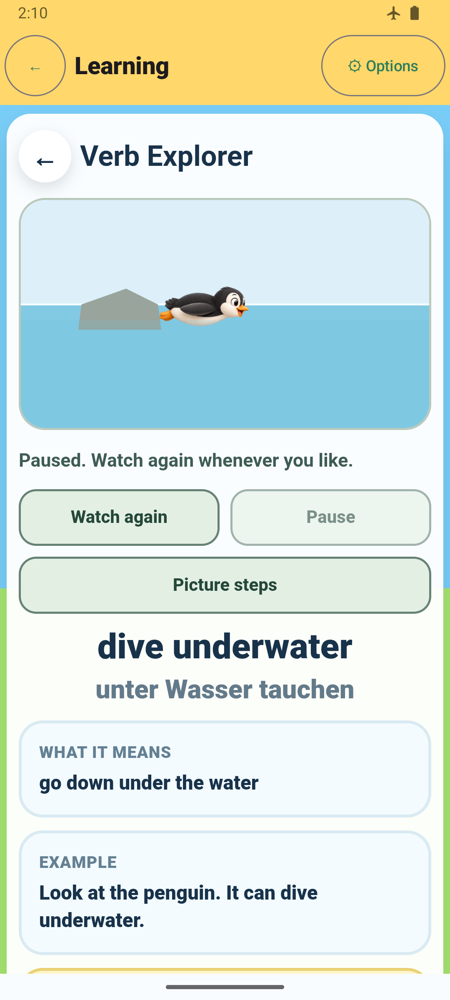
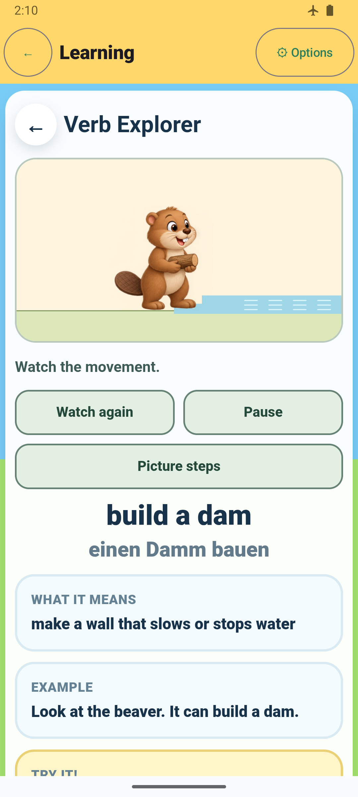
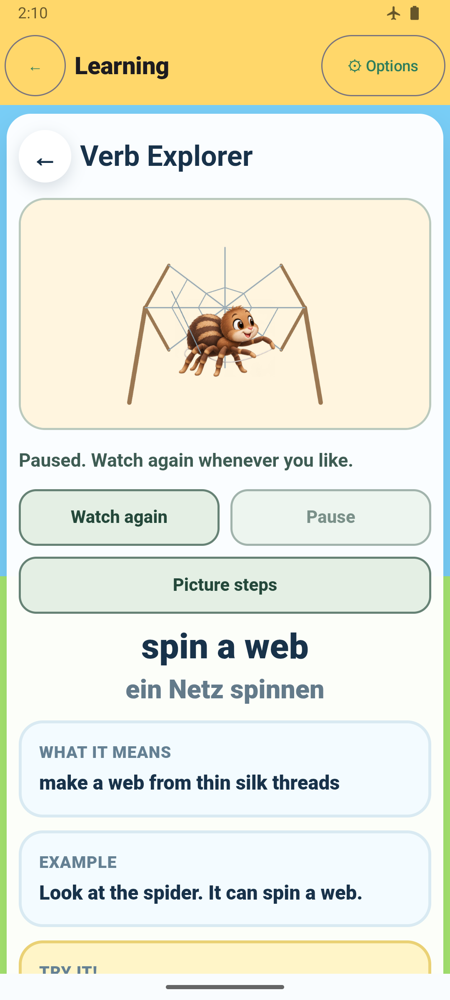
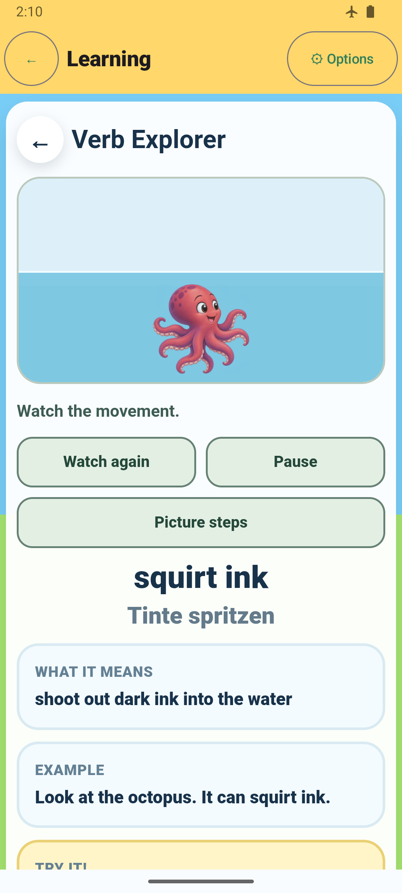
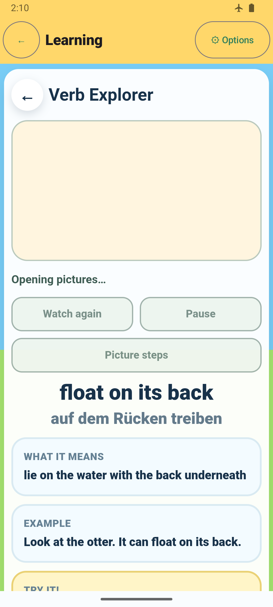
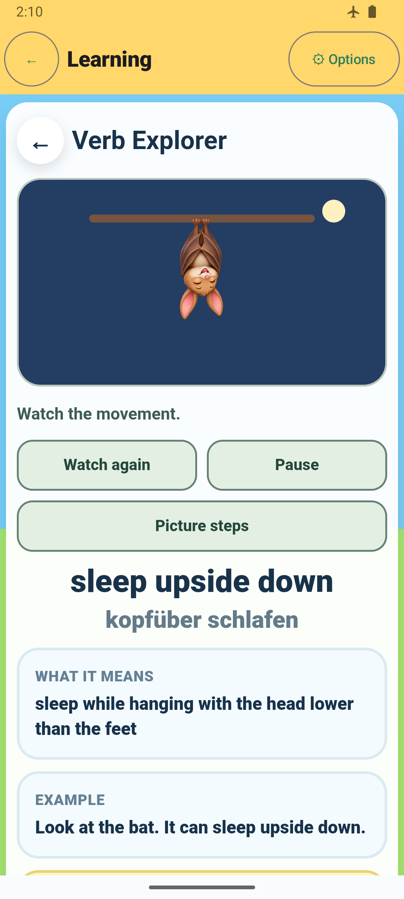
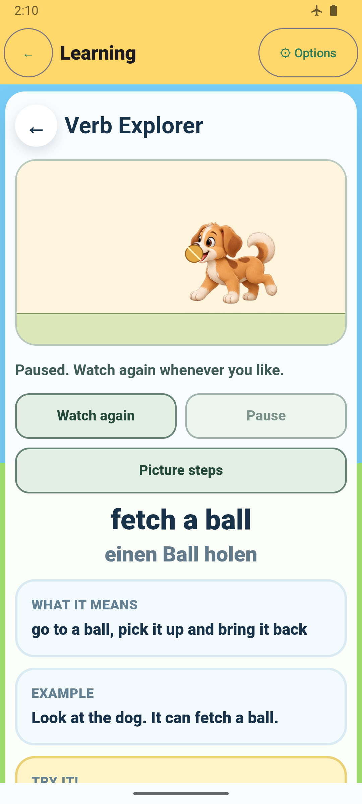

5. Dive underwater

API 35 emulator, offline/airplane mode, final passing combined run. These full-route screenshots show framing and controls; asynchronous capture means their exact animation phase varies. Deterministic eight-phase comparisons for all 53 lessons · Validation and provenance.






